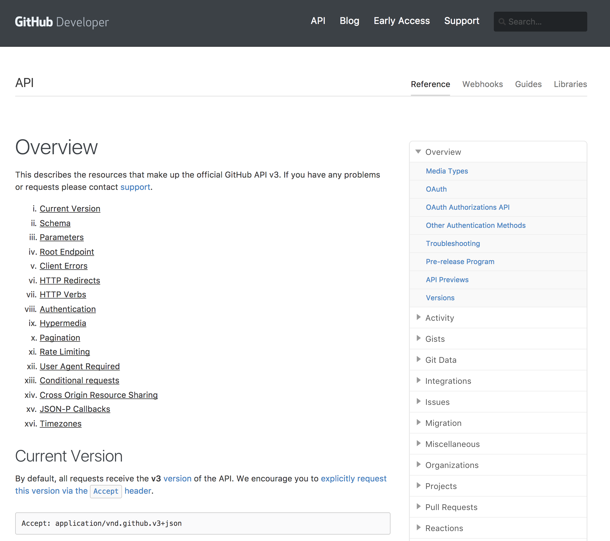
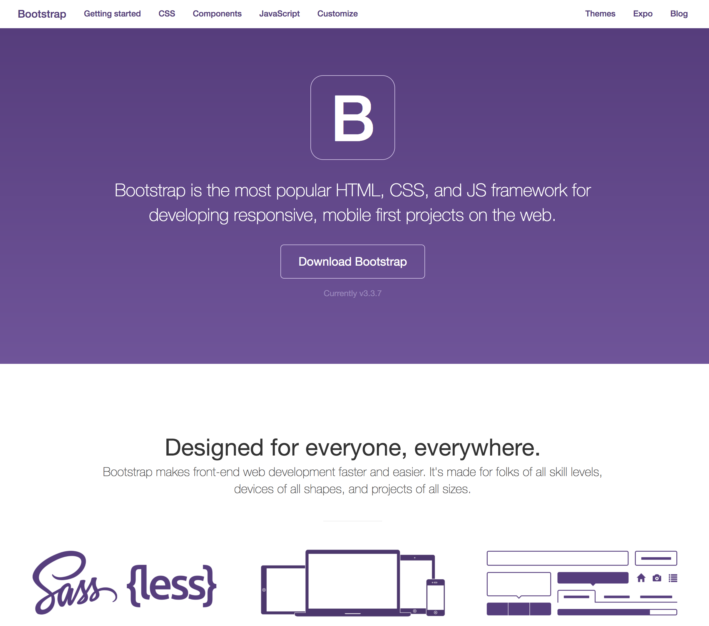
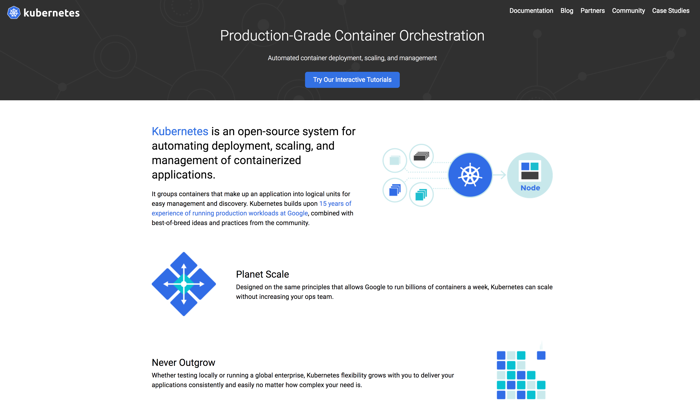
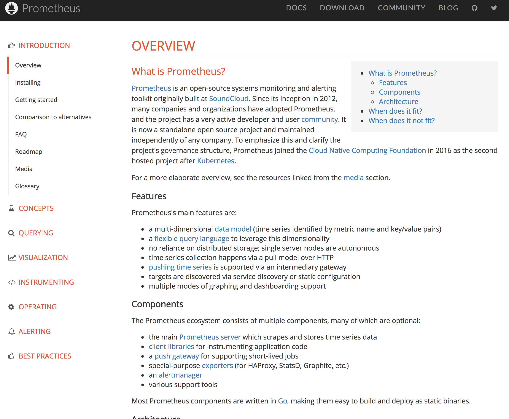
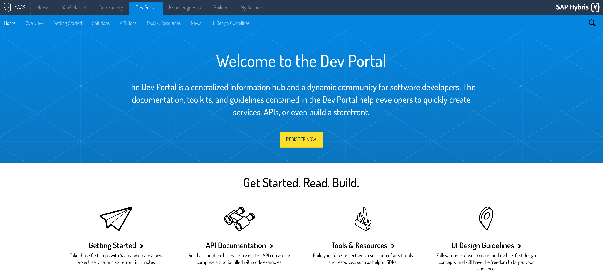
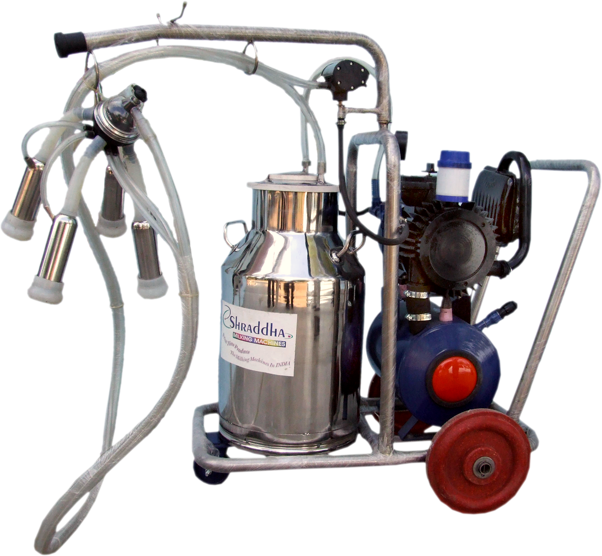

Static Site Generators
The Game Changers
Created by Lukasz Gornicki / @derberq
Working on YaaS in SAP Hybris
Tool that takes your input data, injects it in a predefined layouts and generates a final output files that you can later expose.
Tool that takes your input data, injects it in a predefined layouts and generates a final output files that you can later expose.
Static Site Generator
word by word
Static
Not dynamic
Site
Generator
static site generators
available generators
known implementations
GitHub Developer on nanoc
Bootstrap on Jekyll
Kubernetes from Google on Jekyll
Prometheus from SoundCloud on nanoc
YaaS Dev Portal on DocPad
innovative, cloud, open source, startup
https://github.com/derberg/docs-with-static-site-generators
SSG vs DITA
DITA is an XML based standard
SSGs are tools that generate output basing on a given input



SSG and DITA comparison
Content Reuse
conref="../reusables/topics/reusables-importing-data.dita#reusables-importing-data/smart-paste-para"
<%- @partial('feedback_url') %>
Metadata
---
title: My blog post about cats
tags:
- animal
---
your content written in **Makrdown** or HTML
Maps - relationship tables
Information Typing
---
title: Creating an object
type: Tutorial
---
Specialization
What is my message anyway
DITA
Static Site Generators
Can Static Site Generators and DITA coexist?
---
title: 'Wallet Configuration'
order: 10
---
A Marketer can configure Apple Wallet and Google Wallet to create digital loyalty cards
and coupons.
A loyalty administrator must provide Apple Wallet and Google Wallet credentials that were used
while signing up as a merchant with Apple and Google respectively. After providing the
credentials, a loyalty administrator can create a digital loyalty card and coupon for
Apple Wallet and Google Wallet.
SSG Advantages and Disadvantages
Disadvantages
Advantages?
Should I use it?
Who are you?
Technical Writer / Information Developer / Content Provider
Business Decider / Documentation Manager / Strategiest / Architect
SSG Next Step
Problem
Slate vs DocuApiContent as a Service
Presentation Layer vs ContentThanks!
YaaS Dev Portal: https://devportal.yaas.io
YaaS Knowledge Hub: https://knowledge.yaas.io
This presentation: https://github.com/derberg/staticsitegenerators_gamechangers
GitHub: derberg
Twitter: @derberq
DocPad: https://docpad.org/
reveal.js: https://github.com/hakimel/reveal.js